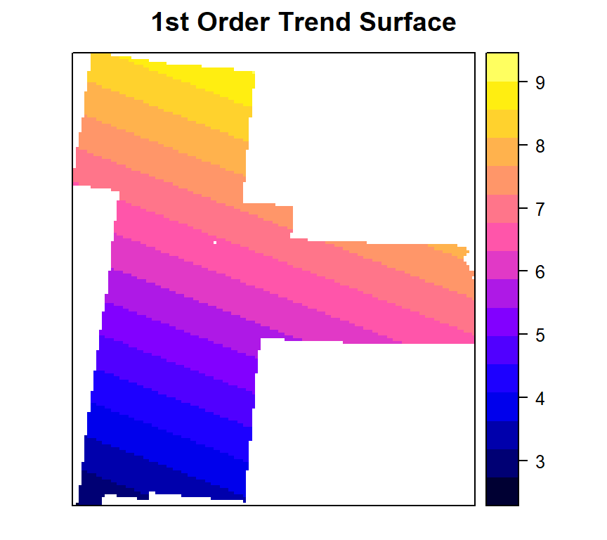
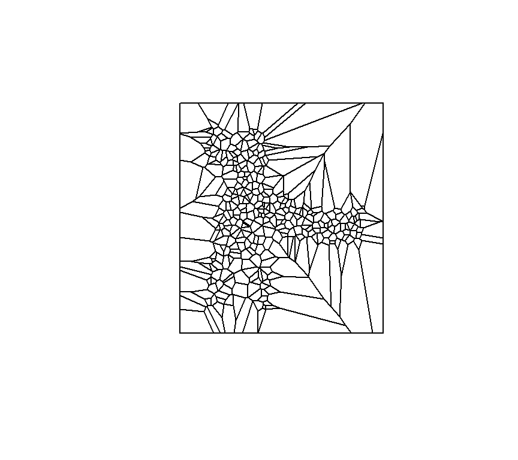
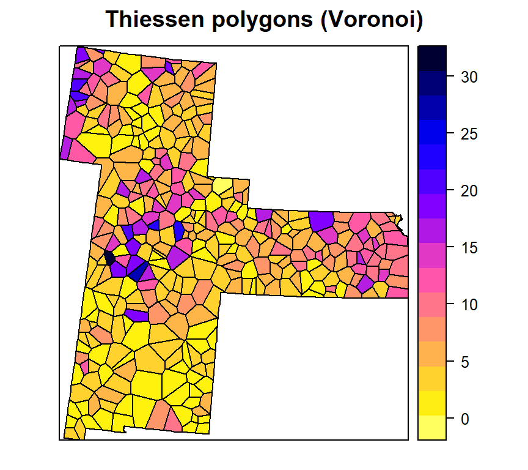
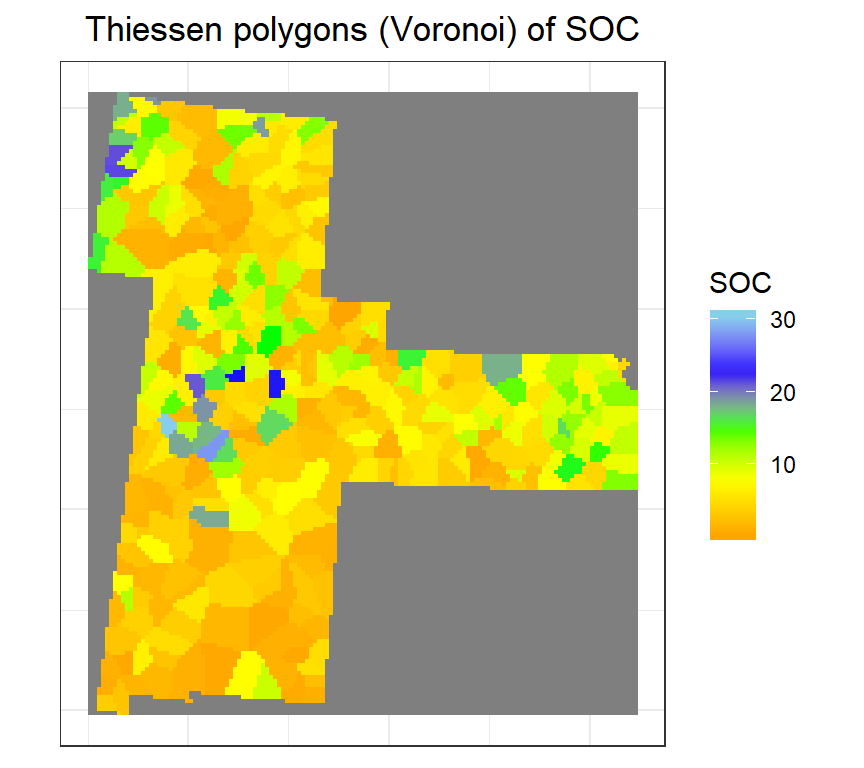
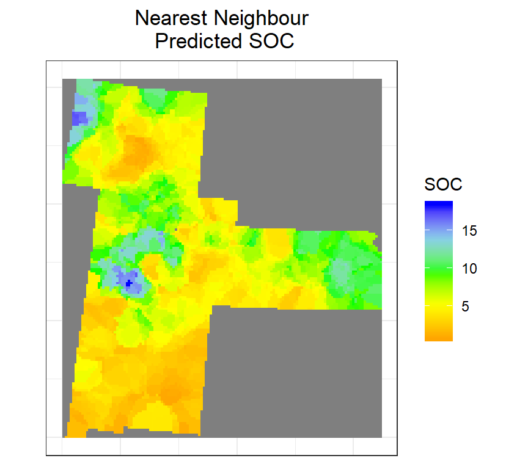
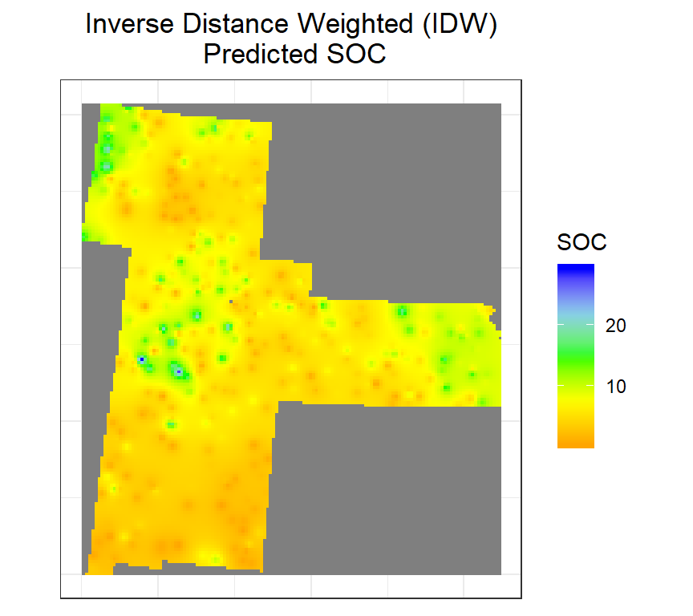
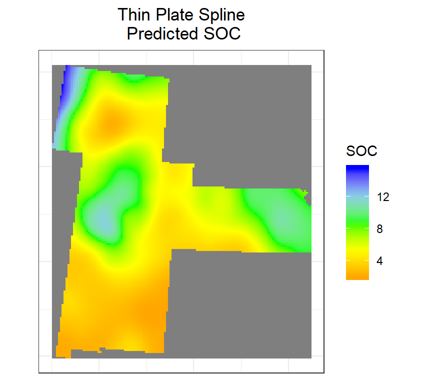

Deterministic Methods for Spatial Interpolation
![logo]()
Deterministic interpolation techniques, also known as exact interpolator, predict values from measured points, based on either the extent of similarity (inverse distance weighted) or the degree of smoothing (radial basis functions). This kind of interpolation techniques usually predict a value that is identical to the measured value at a sampled location without documenting potential error or error is assumed to be negligible.
Global techniques calculate predictions using the entire data set (Polynomial Trend Surface). Local techniques calculate predictions from the measured points within neighborhoods, which are smaller spatial areas within the larger study area.
In this exercise we will explore following deterministic methods to predict Soil Organic C:
Load package:
library(plyr)
library(dplyr)
library(gstat)
library(raster)
library(ggplot2)
library(car)
library(classInt)
library(RStoolbox)
library(spatstat)
library(dismo)
library(fields)Load Data
The soil organic carbon data (train and test data set) could be found here.
# Define data folder
dataFolder<-"F:\\Spatial_Data_Processing_and_Analysis_R\\Data\\DATA_08\\"train<-read.csv(paste0(dataFolder,"train_data.csv"), header= TRUE)
state<-shapefile(paste0(dataFolder,"GP_STATE.shp"))
grid<-read.csv(paste0(dataFolder, "GP_prediction_grid_data.csv"), header= TRUE) p.grid<-grid[,2:3]Define coordinates
coordinates(train) = ~x+y
coordinates(grid) = ~x+y
gridded(grid) <- TRUE Polynomial Trend Surface
Polynomial trend surfaces analysis is the most widely used global interpolation techniques where data is fitted with a least square equation (linear or quadratic equation), and then, interpolate surface is created based on this equation. The nature of the resulting surface is controlled by the order of the polynomial.
Linear fit
To fit a first order polynomial model:
SOC =intercept + aX+ bY (X = x coordinates, Y= y- coordinates)
We will use krige() function of gstat package without the geographic coordinates specified. It will perform ordinary or weighted least squares prediction
model.lm<-krige(SOC ~ x + y, train, grid)## [ordinary or weighted least squares prediction]summary(model.lm)## Object of class SpatialPixelsDataFrame
## Coordinates:
## min max
## x -1250285 119715
## y 998795 2538795
## Is projected: NA
## proj4string : [NA]
## Number of points: 10674
## Grid attributes:
## cellcentre.offset cellsize cells.dim
## x -1245285 10000 137
## y 1003795 10000 154
## Data attributes:
## var1.pred var1.var
## Min. :2.726 Min. :23.89
## 1st Qu.:5.046 1st Qu.:23.94
## Median :6.480 Median :24.00
## Mean :6.190 Mean :24.03
## 3rd Qu.:7.254 3rd Qu.:24.10
## Max. :9.006 Max. :24.39Plot map
spplot(model.lm ,"var1.pred",
main= "1st Order Trend Surface")
Quadratic Fit
To fit a second order polynomial model:
SOC = x + y + I(x*y) + I(x^2) + I(y^2)
model.quad<-krige(SOC ~ x + y + I(x*y) + I(x^2) + I(y^2), train, grid)## [ordinary or weighted least squares prediction]summary(model.quad)## Object of class SpatialPixelsDataFrame
## Coordinates:
## min max
## x -1250285 119715
## y 998795 2538795
## Is projected: NA
## proj4string : [NA]
## Number of points: 10674
## Grid attributes:
## cellcentre.offset cellsize cells.dim
## x -1245285 10000 137
## y 1003795 10000 154
## Data attributes:
## var1.pred var1.var
## Min. : 0.6923 Min. :21.84
## 1st Qu.: 5.0919 1st Qu.:21.88
## Median : 6.0541 Median :21.96
## Mean : 6.1666 Mean :22.06
## 3rd Qu.: 7.5374 3rd Qu.:22.17
## Max. :11.5427 Max. :23.52Plot map
spplot(model.quad ,"var1.pred",
main= "2nd Order Trend Surface")
Proximity Analysis-Thiessen Polygons
Thiessen polygons is the simplest interpolation method by which we can assign values at all unsampled locations considering the value of the closest sampled location. This way we can define boundaries of an area that is closest to each point relative to all other points. They are mathematically defined by the perpendicular bisectors of the lines between all points.
The Thiessen polygons can be created using ’s *dirichlet() function of spatstat or voronoi() function of dismo package in R
Here, we will apply voronoi function of dismo package
Before creating thiessen polygons, we have to create a SpatialPointsDataFrame
df<-as.data.frame(train)
## define coordinates
xy <- df[,8:9]
SOC<-as.data.frame(df[,10])
names(SOC)[1]<-"SOC"
# Convert to spatial point
SPDF <- SpatialPointsDataFrame(coords = xy, data=SOC) v <- voronoi(SPDF)
plot(v)
Plot looks not good, lets confined into GP state boundary.
# disslove inter-state boundary
bd <- aggregate(state)
# apply intersect fuction to clip
v.gp <- raster::intersect(v, bd)## Warning in raster::intersect(v, bd): non identical CRSNow we plot the maps
spplot(v.gp, 'SOC',
main= "Thiessen polygons (Voronoi)",
col.regions=rev(get_col_regions()))
Now will convert this Voronoi polygon to raster (10 km x 10 km)
r <- raster(bd, res=10000)
vr <- rasterize(v.gp, r, 'SOC')Plot map
ggR(vr, geom_raster = TRUE) +
scale_fill_gradientn("SOC", colours = c("orange", "yellow", "green", "blue","sky blue"))+
theme_bw()+
theme(axis.title.x=element_blank(),
axis.text.x=element_blank(),
axis.ticks.x=element_blank(),
axis.title.y=element_blank(),
axis.text.y=element_blank(),
axis.ticks.y=element_blank())+
ggtitle("Thiessen polygons (Voronoi) of SOC")+
theme(plot.title = element_text(hjust = 0.5))
Nearest Neighbor Interpolation
Here we do nearest neighbor interpolation considering multiple (5) neighbors.
We will use the gstat package to interpolate SOC using Nearest Neighbor Interpolation. First we fit a model ( ~1 means) “intercept only” using krige() function. In the case of spatial data, that would be only ‘x’ and ‘y’ coordinates are used. We set the maximum number of points to 5, and the “inverse distance power” idp to zero, such that all five neighbors are equally weighted.
nn <- krige(SOC ~ 1, train, grid, nmax=5, set=list(idp = 0))## [inverse distance weighted interpolation]Convert to raster
nn.na<-na.omit(nn)
nn.pred<-rasterFromXYZ(as.data.frame(nn)[, c("x", "y", "var1.pred")])Plot Nearest Neighbour predicted SOC
ggR(nn.pred, geom_raster = TRUE) +
scale_fill_gradientn("SOC", colours = c("orange", "yellow", "green", "sky blue","blue"))+
theme_bw()+
theme(axis.title.x=element_blank(),
axis.text.x=element_blank(),
axis.ticks.x=element_blank(),
axis.title.y=element_blank(),
axis.text.y=element_blank(),
axis.ticks.y=element_blank())+
ggtitle("Nearest Neighbour\n Predicted SOC")+
theme(plot.title = element_text(hjust = 0.5))
Inverse Distance Weighted Interpolation
Inverse distance weighted (IDW) is one of the most commonly used non-statistical method for spatial interpolation based on an assumption that things that are close to one another are more alike than those that are farther apart, and each measured point has a local influence that diminishes with distance. It gives greater weights to points closest to the prediction location, and the weights diminish as a function of distance. The factors that affect the accuracy of IWD are the value of the power parameter and size and the number of the neighbor.

We will use the gstat package to interpolate SOC using IDW. First we fit a model ( ~1 means) “intercept only” using krige() function. In the case of spatial data, that would be only ‘x’ and ‘y’ coordinates are used.
IDW<- krige(SOC ~ 1, train, grid)## [inverse distance weighted interpolation]summary(IDW)## Object of class SpatialPixelsDataFrame
## Coordinates:
## min max
## x -1250285 119715
## y 998795 2538795
## Is projected: NA
## proj4string : [NA]
## Number of points: 10674
## Grid attributes:
## cellcentre.offset cellsize cells.dim
## x -1245285 10000 137
## y 1003795 10000 154
## Data attributes:
## var1.pred var1.var
## Min. : 0.4831 Min. : NA
## 1st Qu.: 4.2517 1st Qu.: NA
## Median : 5.7212 Median : NA
## Mean : 6.1423 Mean :NaN
## 3rd Qu.: 7.6260 3rd Qu.: NA
## Max. :29.0807 Max. : NA
## NA's :10674Convert to raster
idw.na<-na.omit(idw)
IDW.pred<-rasterFromXYZ(as.data.frame(IDW)[, c("x", "y", "var1.pred")])Plot IDW predicted SOC
ggR(IDW.pred, geom_raster = TRUE) +
scale_fill_gradientn("SOC", colours = c("orange", "yellow", "green", "sky blue","blue"))+
theme_bw()+
theme(axis.title.x=element_blank(),
axis.text.x=element_blank(),
axis.ticks.x=element_blank(),
axis.title.y=element_blank(),
axis.text.y=element_blank(),
axis.ticks.y=element_blank())+
ggtitle("Inverse Distance Weighted (IDW)\n Predicted SOC")+
theme(plot.title = element_text(hjust = 0.5))
Thin Plate Spline
Thin Plate Splines are used to produce approximations to given data in more than one dimension. These are analogous to the cubic splines in one dimension. We can fits a thin plate spline surface to irregularly spaced spatial data.
We use Tps() function of field package to create thin plate spline surface
m <- Tps(coordinates(train), train$SOC)
tps <- interpolate(r, m)
plot(tps)
tps <- raster::mask(tps,bd) # mask out ggR(tps, geom_raster = TRUE) +
scale_fill_gradientn("SOC", colours = c("orange", "yellow", "green", "sky blue","blue"))+
theme_bw()+
theme(axis.title.x=element_blank(),
axis.text.x=element_blank(),
axis.ticks.x=element_blank(),
axis.title.y=element_blank(),
axis.text.y=element_blank(),
axis.ticks.y=element_blank())+
ggtitle("Thin Plate Spline\n Predicted SOC")+
theme(plot.title = element_text(hjust = 0.5))